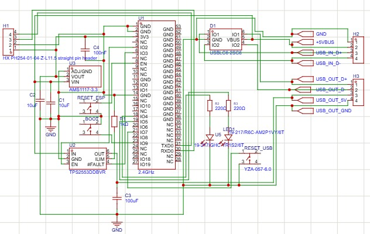
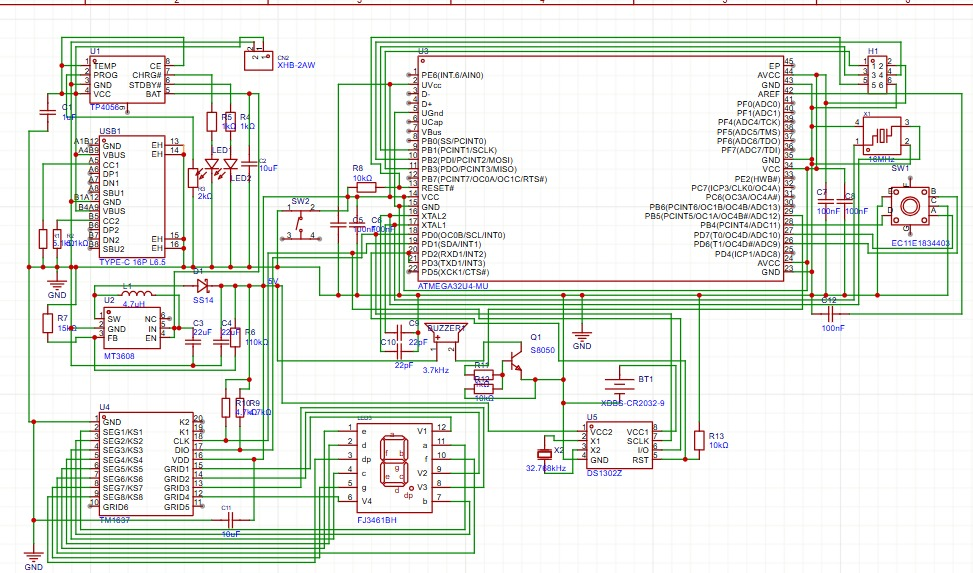

Projetos
USB Recovery Board
ESP32 • USB • PCB Design
Produto Embarcado
ATmega32U4 • Li-ion • SMT
USB Recovery Board
Descrição
Desenvolvimento de hardware baseado em ESP32 para recuperação automática de comunicação USB em bancadas de testes industriais.



Problema Identificado
Em bancadas de testes eletrônicos, falhas de comunicação USB e eventos de sobrecorrente frequentemente exigiam a reinicialização completa do computador. Em alguns casos o tempo de recuperação podia variar entre 10 e 15 minutos, impactando diretamente a produtividade da operação.
Solução Desenvolvida
Foi desenvolvido um módulo eletrônico baseado em ESP32 capaz de monitorar continuamente tensão e corrente das portas USB. A solução protege as interfaces contra ESD, sobrecorrentes e eventos transitórios, além de permitir a recuperação controlada da comunicação USB sem necessidade de reinicialização do sistema hospedeiro.
Principais Funcionalidades
- Monitoramento de tensão USB
- Monitoramento de corrente USB
- Proteção ESD
- Proteção contra sobrecorrente
- Proteção contra curto-circuito
- Sinalização por LEDs
- Recuperação automática da interface USB
Atividades Desenvolvidas
- Levantamento de requisitos
- Projeto eletrônico
- Desenvolvimento do esquemático
- Projeto PCB
- Seleção de componentes
- Proteção ESD
- Firmware ESP32
- Validação funcional
- Gerber, BOM e Pick & Place
Resultados
Redução do tempo de parada das bancadas de teste, aumento da disponibilidade operacional e proteção das interfaces USB contra falhas elétricas.
Produto Eletrônico Embarcado
Descrição
Desenvolvimento completo de um produto eletrônico embarcado baseado em microcontrolador ATmega32U4, projetado para operar de forma autônoma utilizando bateria recarregável de íons de lítio, sistema de gerenciamento de energia, RTC (Relógio de Tempo Real), interface de usuário e sinalização sonora.


Problema Identificado
O desenvolvimento de dispositivos eletrônicos embarcados exige a integração eficiente entre alimentação, processamento, interface de usuário e gerenciamento de energia. Além disso, a criação de um hardware confiável requer a validação das interações entre componentes eletrônicos e a preparação adequada para fabricação em escala.
Solução Desenvolvida
Foi desenvolvido um dispositivo eletrônico embarcado baseado em ATmega32U4, integrando sistema de alimentação por bateria Li-ion, circuito de carregamento USB-C, conversor DC-DC Boost, relógio de tempo real (RTC), display digital, encoder rotativo e sistema de alarme sonoro. O projeto contemplou desde a arquitetura eletrônica até a preparação dos arquivos necessários para fabricação SMT, garantindo uma solução funcional e pronta para produção.
Principais Funcionalidades
- Controle por microcontrolador ATmega32U4
- Alimentação por bateria Li-ion
- Carregamento via USB-C
- Conversão DC-DC Boost
- Relógio de Tempo Real (RTC)
- Display digital para interface do usuário
- Configuração por encoder rotativo
- Sistema de alarme sonoro
- Operação portátil e autônoma
Atividades Desenvolvidas
- Levantamento de requisitos do produto
- Definição da arquitetura eletrônica
- Seleção e especificação de componentes
- Desenvolvimento do diagrama esquemático
- Projeto e roteamento da PCB
- Integração dos circuitos de alimentação
- Validação das conexões e interfaces
- Geração de BOM (Bill of Materials)
- Geração de arquivos Pick & Place
- Geração de arquivos Gerber para fabricação SMT
Resultados
Desenvolvimento de um produto eletrônico completo, contemplando todas as etapas do fluxo de engenharia de hardware, desde a concepção do circuito até a preparação para fabricação industrial. O projeto demonstra competências em sistemas embarcados, desenvolvimento de PCB, integração de subsistemas eletrônicos e documentação para produção SMT.